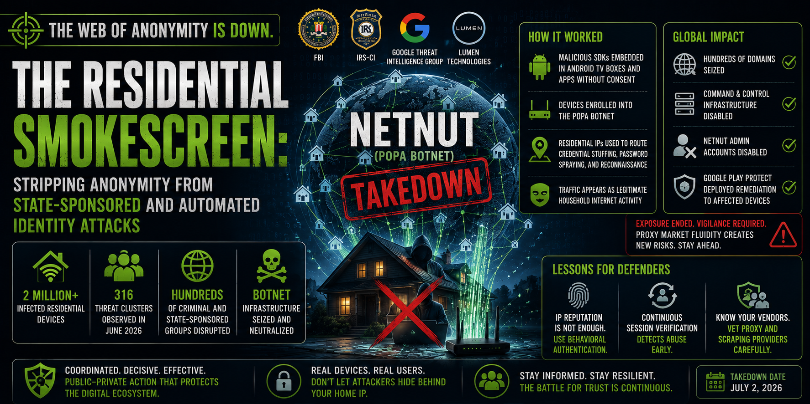

The Residential Smokescreen: Stripping Anonymity from State-Sponsored and Automated Identity Attacks

Executive Summary
On July 2, 2026, the Federal Bureau of Investigation, the IRS Criminal Investigation division, and Google's Threat Intelligence Group executed a coordinated global takedown of the NetNut proxy network—also tracked as the Popa botnet—dismantling infrastructure commanding at least 2 million infected residential devices that had served as anonymous routing infrastructure for hundreds of threat clusters spanning ransomware operations to state-sponsored espionage. Built by embedding silent bandwidth-sharing SDK components into uncertified Android TV hardware and mobile applications without user consent, NetNut provided threat actors with a mechanism to route credential-stuffing, password-spraying, and reconnaissance operations through domestic consumer IP addresses indistinguishable from ordinary household traffic. The operation disrupted commercial domains, disabled administrative infrastructure, and deployed automated endpoint remediations through Google Play Protect. For enterprise security teams, the takedown resolves one threat surface while introducing a period of proxy market fluidity that demands elevated vigilance. Static IP-based defensive postures that the NetNut ecosystem exposed as insufficient require replacement with behavioral authentication and continuous session verification architectures.
Key Finding: The NetNut/Popa botnet silently enlisted over 2 million residential devices as anonymous proxy nodes, enabling hundreds of threat clusters — including ransomware affiliates and state-sponsored espionage groups — to route malicious operations through domestic IP addresses that bypassed enterprise geo-blocking and IP reputation controls entirely. The network's white-label reseller architecture means the takedown disrupts capacity without eliminating the commercial incentive to reconstitute it through alternative botnet infrastructure.
What Happened
On July 2, 2026, the Federal Bureau of Investigation, the IRS Criminal Investigation division, Google's Threat Intelligence Group, Lumen Technologies, and the Shadowserver Foundation executed a coordinated global interdiction operation against the NetNut residential proxy network and its underlying Popa botnet infrastructure. The operation resulted in seizure of hundreds of internet domains supporting NetNut's commercial customer interfaces and backend command-and-control servers, while Google simultaneously disabled administrative accounts and deployed automated Play Protect updates to deactivate applications containing malicious SDK components across affected endpoints worldwide.
The NetNut network, at the time of disruption, commanded a documented pool of at least 2 million infected residential exit nodes distributed globally. The infrastructure was constructed over an extended period by embedding silent bandwidth-harvesting SDK components within low-cost, uncertified Android TV boxes, streaming media adapters, and mobile VPN utilities. These components operated without explicit user consent, converting consumer devices into proxy relay nodes while their owners remained unaware. The resulting network presented external observers—including enterprise security systems—with traffic that appeared to originate from ordinary residential internet connections rather than identifiable threat infrastructure.
The scale of active criminal and state-sponsored use was documented during Google's monitoring operations in June 2026, when researchers observed 316 distinct threat clusters routing malicious activity through NetNut exit nodes within a single tracking window. These clusters ranged from ransomware affiliate operations conducting initial-access campaigns to state-sponsored espionage groups using the residential IP pool to conduct reconnaissance against enterprise cloud environments under cover of domestic internet service provider addresses. The operational value the network provided was precisely its indistinguishability: traffic routed through residential endpoints bypasses geo-blocking filters calibrated to flag data-center IP ranges and defeats IP reputation systems lacking negative signals associated with household addresses.
Investigative reporting established a connection between NetNut's commercial operations and Alarum Technologies, a NASDAQ-listed company, raising questions about the relationship between legitimate commercial proxy services and the non-consensual device enrollment that populated the botnet's residential node pool. NetNut also operated an extensive white-label reseller program through which dozens of boutique proxy brands sourced capacity from the same underlying botnet infrastructure—a structural characteristic with significant implications for the post-takedown defensive environment.
Why It Matters
For Security Operations Center Teams & Threat Hunters
The NetNut takedown clarifies a threat dynamic that has degraded the reliability of IP-based defensive controls across enterprise environments. Residential proxy networks exploit a fundamental asymmetry in how security systems evaluate incoming traffic: domestic ISP addresses carry an implicit trust signal that data-center IP ranges do not. When threat actors route credential-stuffing campaigns or cloud reconnaissance operations through 2 million residential endpoints, the resulting traffic is functionally indistinguishable at the network perimeter from legitimate consumer authentication activity. Geo-blocking and IP reputation feeds—two of the most widely deployed first-line defensive controls—provide no meaningful signal against this technique.
For Corporate Executives, Legal Counsel, & Compliance Officers
The documented connection between a publicly traded commercial proxy vendor and non-consensual consumer device enrollment represents a compliance risk warranting careful third-party vendor scrutiny. Organizations that have contracted with commercial proxy or data-scraping services may have indirectly sourced routing capacity from botnet infrastructure, creating potential regulatory and reputational exposure. The structural opacity of white-label proxy reseller chains makes due diligence in this vendor category materially more complex than it may appear.
For Consumer-Facing Organizations & Home Network Security Advocates
The NetNut campaign illustrates a threat vector connecting individual device hygiene to enterprise security outcomes. When an infected smart TV or streaming adapter routes threat actor traffic through a residential network, it can provide a vantage point from which internal network reconnaissance becomes possible. The conversion of off-brand consumer electronics into proxy nodes without owner awareness operates below the visibility threshold of most household users and cannot be addressed through awareness alone without enforcement actions such as the one executed on July 2.
Operational Implications
The most immediate operational implication of the NetNut disruption is the need to recalibrate authentication risk baselines that were calibrated against the previous volume of residential-originating threat traffic. Security Information and Event Management platforms and authentication monitoring systems tuned to the elevated baseline of malicious residential IP activity will need adjustment as that traffic volume decreases. This recalibration presents both opportunity—reduced noise may improve detection precision for remaining residential-originating threats—and risk, if reduced alert volumes are interpreted as an improvement in security posture rather than a shift in attacker infrastructure.
The white-label reseller architecture that characterized NetNut's commercial operations introduces near-term defensive complexity that the takedown itself does not resolve. Because dozens of boutique proxy brands sourced capacity from the Popa botnet's residential pool, the seizure simultaneously degrades operational capabilities of multiple proxy operators. However, the commercial incentive to restore that capacity is immediate: disrupted providers are likely to pivot toward surviving competitor networks, reconstituting their residential proxy offerings through alternative botnet pools. Threat intelligence teams should not treat post-takedown residential traffic as inherently lower risk; the proxy market's structural fluidity means that comparable routing infrastructure will likely be reconstituted.
The longer-term operational implication for enterprise security architecture is the confirmation that location-based access controls are insufficient as primary defensive mechanisms against determined adversaries with access to residential proxy infrastructure. Security architectures that rely on IP reputation, geo-fencing, or data-center IP blocking as meaningful barriers are structurally misaligned with this threat category. The effective defensive response is architectural: continuous session verification, behavioral authentication, and device-binding controls that assess access legitimacy based on contextual signals rather than network origin.
Recommended Actions
Organizations should implement responses stratified by operational maturity.
* Begin with two immediately actionable hygiene measures.
- 1 - Corporate acceptable use policies should be updated to explicitly prohibit employee installation of applications or browser extensions that offer compensation in exchange for sharing unused network bandwidth; this is the primary consumer-facing recruitment mechanism used by SDK-based proxy networks.
- 2 - IT procurement and facilities teams should audit whether uncertified, off-brand Android TV devices, streaming adapters, or similarly unverified consumer hardware are connected to corporate network segments, and should remove or isolate any such devices pending vendor certification review.
- 1 - Reconfigure SIEM alerting logic to treat high-frequency or multi-account authentication attempts originating from residential ISP address ranges with equivalent scrutiny to those originating from data-center IP blocks. The historical convention of treating domestic IP traffic as inherently lower risk than data-center traffic is a calibration artifact that the NetNut campaign directly exploits.
- 2 - Enforce active endpoint posture validation for all remote connections to corporate cloud environments, confirming that no unauthorized background proxy applications or VPN plugins are active before session establishment is permitted.
* Prioritize two architectural investments.
- 1 - Continuous adaptive authentication—evaluating access requests against behavioral signals including device binding tokens, session context, and usage pattern consistency—renders the location obfuscation provided by residential proxy networks operationally irrelevant.
- 2 - Additionally, implement automated threat intelligence integration that ingests live botnet indicator feeds and programmatically adjusts firewall visibility thresholds for residential IP ranges matching documented proxy exit node signatures.
Closing Statement
The coordinated disruption of the NetNut network is a significant interdiction achievement—one that removed anonymous routing infrastructure from hundreds of threat clusters and demonstrated that public-private enforcement actions can reach commercial botnet ecosystems operating beneath legitimate corporate structures. It also marks a point of transition rather than resolution. The proxy market's structural fluidity, the persistence of underlying attacker techniques, and the pattern of successive residential proxy disruptions across 2026 collectively confirm that residential IP obfuscation is an established adversarial investment category, not an opportunistic tactic.
Bridging the awareness gap between a law enforcement action and a durable defensive posture requires organizations to treat this disruption as diagnostic evidence rather than reassurance. Institutions best positioned to absorb the next iteration of residential proxy-enabled attacks will be those that have already shifted their authentication architectures away from location-based trust—because the residential smokescreen, even temporarily cleared, will be reconstructed.